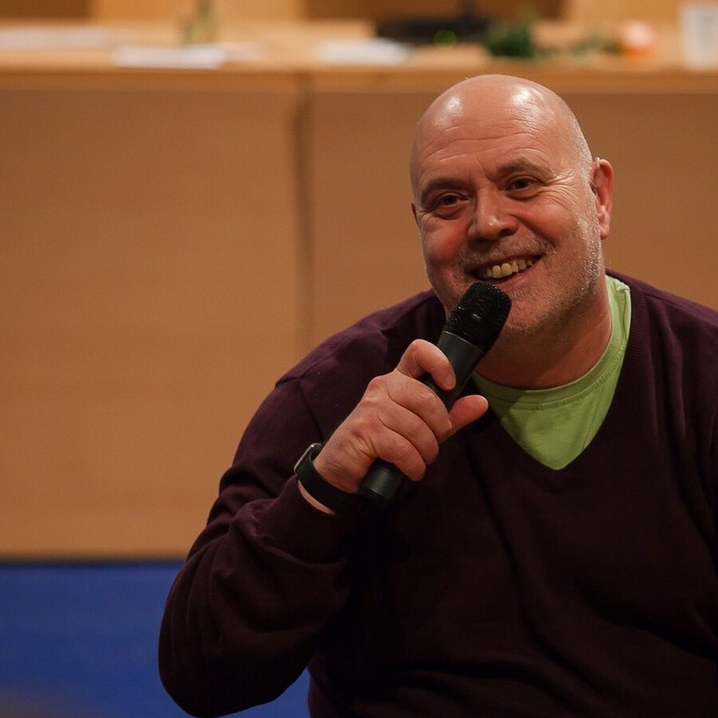

Personal Assistant · companionship, conversation and practical support
I trained as a nurse in 1991 and as a midwife in 1993, and I have spent most of my working life in rooms where people are at their most exposed. I began in nursing, on dementia wards and in care homes, and then moved into birth rooms, where I stayed for the rest of my clinical career.
After that came years of working with families, and more recently work as an Appropriate Adult and alongside advocacy services and other agencies. What all of it has taught me is that the task is rarely the point, because the person is.

A good personal assistant is not a pair of hands. They are someone who turns up when they said they would, remembers what matters, and is easy to be with. Most of what makes a difference is unremarkable: a cup of tea made together, a walk taken at the right pace, and a conversation that goes somewhere.
I work with people rather than for them. If we are cooking, we cook together, and if we are sorting a cupboard, we talk while we do it. The practical thing gets done, and something else happens alongside it, which is confidence, company and a bit of skill that was not there before.
£18.50 an hourEvery client is considered personally, and I work on a sliding scale where that is what is needed.
If the rate is the thing standing between someone and support, then say so and we will talk about it, because I would rather have the conversation than lose the work.
It starts with a phone call, so that we both know what is being asked for. Then there is a first session with no commitment on either side. After a few weeks we look at it together and decide whether it is working, and if it is not, we stop, because that is a normal ending rather than a failed one.
Tell me what you know, which is who they are, what they would like help with, and anything I should be careful of. I will speak to them myself before I meet them. I will not need their history in writing, and I will not report back on what we talk about, only on whether the arrangement is working.